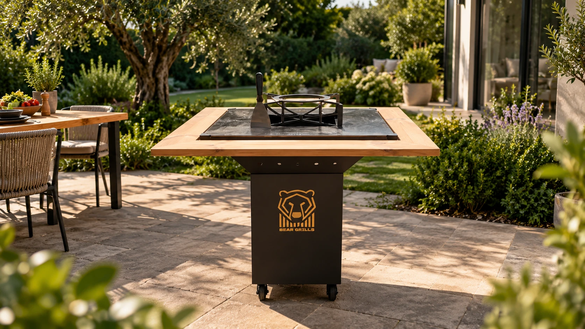

Plită din oțel de 8 mm
Căldură uniformă pe toată suprafața — mai fierbinte în centru pentru sear, mai blândă spre margini pentru legume.

Masă de grătar cu plită din oțel și blat din lemn masiv. Gătești, servești și stai la masă — în același loc.
În stoc · expediere în 24–48h
Despre produs
Bear Grills este o masă de grătar tip plancha: focul arde în centru, plita din oțel se încinge uniform, iar blatul din lemn rămâne liber pentru farfurii și pahare. Toată lumea stă în jurul focului, nu în spatele lui.
Căldură uniformă pe toată suprafața — mai fierbinte în centru pentru sear, mai blândă spre margini pentru legume.
Blat generos din lemn, protejat cu ulei pentru exterior. Loc pentru ingrediente, farfurii și ustensile.
Focar central cu inel pentru wok sau ceaun. Aerisire laterală pentru un tiraj constant.
Patru roți robuste, două cu frână. Îl muți ușor pe terasă sau îl pui la adăpost iarna.
Specificații
Tot ce trebuie să știi înainte de comandă. Ai o întrebare? Scrie-ne și îți răspundem în aceeași zi.
Recenzii
„Cel mai bun lucru cumpărat pentru terasă. Plita se încinge repede și ține căldura toată seara. Toți prietenii vor să vină la noi acum.”

„Arată superb, finisajele sunt impecabile. A ajuns în 3 zile, bine ambalat, iar montajul a durat mai puțin de o oră.”

„Am renunțat la grătarul clasic. Pe plită fac de la mici și legume până la ouă dimineața. Calitate românească adevărată.”

Întrebări frecvente
Expediem în 24–48h de la confirmarea comenzii. Livrarea prin curier durează 2–4 zile lucrătoare, oriunde în România.
Grătarul vine pre-asamblat. Montezi doar blatul și roțile — durează sub o oră, cu instrucțiunile incluse.
După fiecare folosire, răzuiești resturile cu spatula și ungi plita cu puțin ulei. Stratul de ulei o protejează de rugină.
Da, ai 14 zile pentru retur, conform legislației în vigoare. Produsul trebuie să fie nefolosit și în ambalajul original.